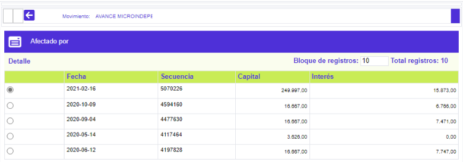

Transacciones |
En este formulario que se invoca desde el detalle consulta de la tarjeta, la entidad puede consultar la información acerca de las transacciones que han afectado a la tarjeta bien sea que estas se hayan originado directamente por las utilizaciones que el cliente haya hecho, o indirectamente como resultado de transacciones generadas internamente por el sistema tales como cuotas de manejo, seguros, comisiones, reversiones, ajustes, entre otras posibles causas.
La opción contiene el hipervínculo detalle transacción que permite invocar el formulario con la información completa de cada una de las transacciones que le han sido aplicadas a la tarjeta y en el cual ninguno de sus datos es modificable.

Descripción de campos
Secuencia |
Campo que muestra la secuencia única que identifica a la transacción y que es asignado internamente por el sistema. |
|
Fecha |
Este campo despliega la fecha en la cual se efectuó / generó la transacción. |
Número comprobante |
Campo que muestra el número del comprobante que soporta la transacción aplicada a la tarjeta. |
Transacción |
Este campo despliega la transacción interna que fué aplicada a la tarjeta de acuerdo con lo parametrizado en el traductor de transacciones. |
Descripción |
Campo que muestra de acuerdo con lo definido para la transacción bien sea el nombre del establecimiento en el cual ésta fue efectuada o la descripción de la transacción. |
Concepto transacción |
Este campo despliega el concepto asociado con la transacción interna aplicada a la tarjeta. |
Moneda |
Campo que muestra la moneda de almacenamiento definida para la transacción aplicada a la tarjeta. |
Valor inicial |
Este campo contiene el monto o valor inicial por el cual fue efectuada la transacción y con el cual ingresó al sistema para ser aplicada a la tarjeta. |
Plazo |
Campo que indica el plazo que fue solicitado por el cliente y/o asignado por el sistema para diferir el pago de la transacción aplicada. |
Tasa |
Este campo despliega según corresponda con el tipo de transacción el valor del indicador económico asociado con la transacción aplicada a la tarjeta y que se va a utilizar para calcular los intereses corrientes. |
Saldo |
Campo que muestra el saldo de la transacción que a la fecha se encuentra pendiente de facturar al cliente. |